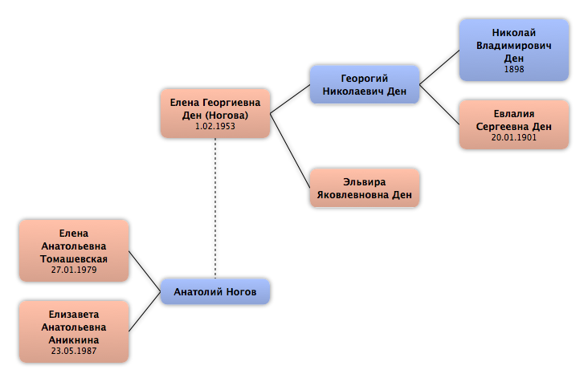

Домой
Домой
 Люди
Люди
 Семьи
Семьи
 Источники
Источники
 Диаграммы
Диаграммы
 Статистика
Статистика
Елена Георгиевна Ден

Контекст

Дополнительные имена
| Тип | Имя |
|---|---|
| Фамилия в браке | Ногова |
Родители
| Отец | Дата рождения | Мать | Дата рождения |
|---|---|---|---|
 Георогий Николаевич Ден Георогий Николаевич Ден
|
Эльвира Яковлевновна Ден
|
Родители и дети
| Партнёры | Дата рождения | Дети |
|---|---|---|
|
Анатолий Ногов
|
Елена Анатольевна Томашевская
Елизавета Анатольевна Аникнина
|
События
| Тип события | Дата | Место | Описание |
|---|---|---|---|
| Рождение | 1.02.1953 |
Факты
Медиа
Примечание
Источники
Родство
| Имя | Степень родства | Дата рождения | Место рождения | Дата смерти | Место смерти |
|---|---|---|---|---|---|
| Партнёров | |||||
| Партнёр или муж | |||||
| Братья и сёстры | |||||
| Брат | 10.10.1959 | Ленинград, СССР | |||
| Дети | |||||
| Дочь | 27.01.1979 | Санкт-Петербург, СССР | |||
| Дочь | 23.05.1987 | Санкт-Петербург, СССР | |||
| Родителей | |||||
| Отец | |||||
| Мать | |||||
| Дедушки и бабушки | |||||
| Дедушка | 1898 | 1942 | |||
| Бабушка | 20.01.1901 | ||||
| Прадедушка и прабабушка | |||||
| Прабабушка | 1942 | ||||
| Прадедушка | 1937 | ||||
| Пра-прадедушка и пра-прабабушка | |||||
| Пра-прадедушка | |||||
| Пра-прадедушка | |||||
| Пра-прабабушка | |||||
| Племянники и племянницы | |||||
| Племянница | 1983 | Ленинград, СССР | |||
| Племянник | 1988 | Ленинград, СССР | |||
| Двоюродные дедушки и двоюродные бабушки | |||||
| Двоюродная бабушка | |||||
| Двоюродные прадедушки и двоюродные прабабушки | |||||
| Двоюродный прадедушка | |||||
| Двоюродная прабабушка | |||||
| Двоюродная прабабушка | |||||
| Дальние родственники | |||||
| Четвероюродная сестра | |||||
| Четвероюродная сестра | 19.03.1963 | Ленинград, СССР | |||
| Четвероюродный брат | 22.02.1965 | Ленинград, СССР | |||
| Другие родственники | |||||
| Двоюродный дядя | |||||
| Двоюродный дядя | |||||
| Четвероюродная племянница | |||||
| Троюродная бабушка | |||||
| Троюродный дядя | |||||
| Троюродная бабушка | 1901 | 1940 | |||
| Троюродная тётя | 01.02.1926 | Ленинград, СССР | 06.10.1997 | Санкт-Петербург, Россия | |
| Четвероюродный племянник | 01.09.1988 | Ленинград, СССР | |||
| Четвероюродный племянник | 19.11.1991 | Санкт-Петербург, Россия | |||
| Четвероюродный племянник | 15.07.1995 | Санкт-Петербург, Россия | |||